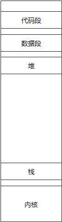
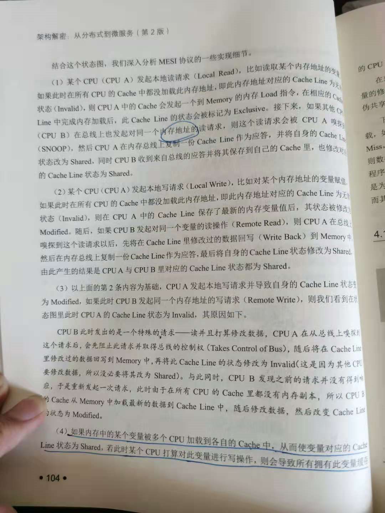

深入理解网络
NIO
NIO模型比较复杂，最好不要尝试自己手写一个NIO程序，最好能够运用到开源的软件，比如Netty。
DirectByteBuffer是采用堆外内存来存放数据的。
MappedByteBuffer使用mmap系统调用来实现文件的内存映射，建立内存映射的效率很高。
内存模型

参考连接：https://blog.csdn.net/yusiguyuan/article/details/39496057
- 对于所有的对象创建，归根到底都是使用了malloc的方式来进行初始化内存。对于malloc的调用，实际上也是使用brk和mmap的系统调用
- brk和mmap的作用是相同的，那就是占用虚拟内存，将虚拟内存映射到物理内存中，不过呢，对于malloc的调用，虽然从时间上已经占用了虚拟内存，但是呢，物理内存是没有进行占用，只有在使用的时候才会进行占用。
- brk和mmap的区别是，如果对于brk的时候，有可能会造成内存空洞问题，也就是只要高水位线的对象没有进行释放的话，那么物理内存和虚拟内存就不会进行释放。
- 对于现在的应用程序来说，虚拟内存基本上是无限的，因为对于64位的程序来说，实际可用的虚拟内存为2^48的大小，也就是256TB，所以，虚拟内存是足够使用的，对于brk和mmap来说。但是呢，物理内存是可能不够用的。如果系统无法申请到内存的话，会将程序的评分的排行榜，将程序kill掉。
- 对于虚拟地址映射到物理地址的话，是通过MMU（硬件来实现），中间也就是通过页表来实现。如果通过虚拟内存来访问物理内存的时候，这个时候如果出现了缺页中断的时候，会将物理内存映射到虚拟内存中，这时候，将物理内存的电位发生变化，将物理内存的原有的内存刷掉进行使用
非阻塞和阻塞
TCP：对于TCP来说，如果应用进程一直没有读取，则在Buffer满了之后发生的动作是：通知对端TCP中的窗口进行关闭，保证TCP套接口接收缓冲区不会一处，保证TCP是可靠传输的。
阻塞：对应着同步，传统的Socket阻塞模式直接导致每个Socket都必须绑定一个线程来操作数据，参与通信的任意一方如果处理数据的速度较慢，都会直接拖累另一方，导致另一方的线程不得不浪费大量的时间在IO等待中。所以，每个Socket都要绑定一个单独的线程正式传统Socket阻塞模式的根本缺陷。
非阻塞：对应着异步。引入事件机制来达到解耦的目的，可以认为在IO层中存在IO调度线程，它不断扫描每个Ｓｏｃｋｅｔ的缓冲区，当发现写入缓冲区额为空时，它会产生一个Ｓｏｃｋｅｔ可写事件，此时程序就可以将数据写入Ｓｏｃｋｅｔ中，如果一次写不完，则等待下次可写事件的通知，当发现在读取缓冲区中有数据时，会产生一个Socket可读事件，程序会收到这个通知事件，就可以从Socket读取数据了。
所以呢，其实对于分布式架构上来说，如果要实现彻底的解耦，那么使用事件通知机制相对会好一点。但是呢，事件通知机制虽然是异步的，但是呢，从整体上不好控制进度，所以，对于分布式架构来说，追求可控，使用RPC或者Restful接口，都是使用同步的方式。
Reactor模型，是著名的非阻塞的框架，一般原则是Reactor的数量与CPU核心书保持一致
网络传输中的对象序列化问题
Java自身的序列化机制有两个问题（也就是Serializable)：序列化的数据比较大，传输效率低，其他语言无法识别和对接。
其实，对于通用的互联网来说，目前是使用JSON机制，JSON序列化存在占用空间大，性能低下等缺陷。但是呢，在进行网络传输的过程中，我们最好还是使用字符串的方式，而不是二进制的方式，虽然二进制的方式相对会比较小一点。
HTTP
在报文编码方式上，HTTP采用了面向程序员的文本编码方式，而不是面向计算机的二进制编码方式。
HTTP是无状态的请求-应答协议。
采用HTTP作为通信协议的分布式系统天然具备了侵入性的基础设施能力全面改进的有心啊。由于HTTP是无状态的，所以，需要Cookie和Session来表示指定的用户。一个用来在浏览器端保存用户状态数据；一个则用来在服务器端保存用户会话数据，两者相辅相成，实现了有状态的HTTP。Cookie的大小比较小，Session会比较大一些，可以防止任意对象到Session中，
采用JWT Token机制代替普通的Session机制，（Token机制则把用户状态信息保存在Token字符串中，服务器端不再维护客户状态，服务器端则可以做到无状态）：就是在用户访问时拦截请求，检查HTTP Header中的Token是否有效，如果无效则重定向到登录界面中，在登录成功后，服务器端生成JWT Token并将其放入Header中返回客户端，客户端保存JWT Token并在随后的请求中带上Header发起访问即可。
分布式系统的经典理论
设计原则：中心化和去中心化
中心化
主流设计，分布式集群中的节点器按照角色分工，分为Leader和Worker。Leader通常负责分发任务并监督Worker，让Worker一直在执行任务；如果Leader发现某个Worker因为意外状况不能正常执行任务，则将该Worker从Worker队伍中去掉，并将其任务分给其他Worker。另外呢，对于中心化的架构来说，还有一种改进点，就是充分相信每个Worker，Leader只负责任务的生成而不再指派任务，由每个Worker自发领取任务，从而避免让个别Worker执行的任务过多，并鼓励能者多劳。
中心化最大的问题：如何保证Leader服务不断，自动选举Leader的能力
去中心化
去中心化：在整个分布式系统中不存在一个区别于其他节点的Leader，所有的节点，所有的进程都能够提供同等的功能
去中心化最大的问题：脑裂，由于网络不稳定，存在网络分区的存在，导致每个Worker都能够独立地处理任务，造成脑裂。
分布式系统的一致性原理
分布式集群中一致性问题的场景如下：N个节点组成一个分布式集群，要保证所有节点都可以执行相同的命令序列，并达到一致的状态。即在所有节点都执行了相同的命令序列后，每个节点的结果都完全相同。实际上，由于分布式系统的不可靠性，通常只要保证集群中超过半数的节点正常并达到一致性即可。
分布式系统的一致性不是说要保证时时刻刻都是一致性，而是保证最终一致性，也就是降低标准的一致性，以数据一致性存在延迟来换取数据读写的高性能。而这段延迟就是不一致窗口，不一致窗口的最大值可以根据以下因素来决定：通信延迟，系统负载，复制方案涉及的副本数量。
分布式系统的基石——Zookeeper
功能：
- 提供集群的集中化的配置管理功能
- 需要提供简单可靠的集群节点动态发现机制
- 需要实现简单可靠的节点Leader选举机制
- 需要提供分布式锁
ZooKeeper只是作为一个分布式的协调中心，可以根据协调中心来实现各个的功能，这些功能从根本上不是ZooKeeper提供的功能，而是由各种插件提供的功能
RPC(远程过程调用)
RPC是建立在Socket之上的一种多进程的通信机制，其目的是设计一套远程通信的通用框架，这个框架能够自动处理通信协议，对象序列化，网络传输等细节，实现一个目的：调用一个远程机器上的接口的代码与以本地调用的代码看起来没有什么区别。
RPC实现：
SOAP在严格意义上是属于XML-RPC的，也就是说中间的请求信息是用XML进行编码的
HTTP REST采用让人容易理解的JSON格式来进行传递请求与应答参数。（Spring也只是HTTP REST实现的一种，Spring从根本上不能够解决配置复杂的问题，只是使用约定胜于配置的方式来实现各种默认的配置）
深入浅析内存
内存是以内存页（4KB)为单位，而CPU运行是因CPU Line为单位（64个子节），CPU Cache都会划分为很多组Cache Line，当Cache从Memory中加载数据时，一次加载一条Cache Line。
在每个Cache Line的头部都由两个Bit来表示自身的状态：
- M（Modified）：修改状态，在其他CPU中没有数据的副本，并且在本CPU上被修改过，与存储器中的数据不一致，最终必然引发系统总线的写指令，将Cache Line中的数据写回Memory中。
- E(Exclusive):独占状态，表示当前Cache line中的数据与Memory中的数据一致，此外，在其他CPU上没有副本
- S(Shared):共享状态，表示Cache Line中的数据与Memory中的数据一致，而且当前的CPU至少在某个CPU中有副本
- I(Invalid):无效状态，在当前Cache Line中没有有效数据或者该Cache Line数据已经失效，不能再用；当Cache要加载新数据时，优先选择此状态的Cache Line，此外，Cache Line的初始状态也是I状态。
MESI协议是业界公认的Cache一致性问题的最佳方案。

如果内存中的某个变量被多个CPU加载到各自的Cache中，从而使变量对应的Cache Line状态为Shared，若此时某个CPU打算对此变量进行写操作，则会导致所有拥有此变量缓存的CPU的Cache Line状态都变成Invalid，这是引发性能下降的一个典型的Cache Miss问题。
NUMA
NUMA的诞生是为了解决共享内存总线的带宽无法满足CPU数量的增加，同时，在一条马路上通行的车多了，难免会陷入”拥堵模式”。
NUMA的实现逻辑：系统的内存与CPU进行分割并捆绑在一起，形成了多个独立的子系统，这些子系统之间高速互联。NUMA架构第一次打破了“大锅饭”模式，内存不再是一个整体，而是被分割为相互独立的几块，被不同的CPU私有化。因此，当CPU访问自身私有的内存地址时会很快得到相应，而如果需要访问其他CPU控制的内存数据，则需要通过某些互联通道访问，相应速度相对变慢。NUMA的主要优点就是伸缩性。
在硬件支持的基础上，还需要软件，需要软件将对象实例化到离CPU最近的内存中。目前Java已经支持NUMA。
内存缓存技术分析
在有限的存储空间中，优先考虑缓存：
- 一旦生成就基本不会变的数据
- 频繁访问的数据（热点数据）
- 计算代价很大的数据
Redis缓存系统在绝大多数情况下的使用场景只是内存数据的简单读取操作，单线程避免了复杂的线程同步，上下文切换，锁等复杂逻辑，也使得原子性计算这种功能很容易实现。如果要使用多个core的话，就是使用分片技术，说白了，就是启动多个Redis进程实例。
深入解析分布式文件存储
经典的网络文件系统NFS：将某个远程Server上的指定文件目录映射到本地文件系统的某个目录上，使得从客户端看来，访问远程文件与本地文件没有什么区别，并且所有针对本地文件的IO读取的程序不用修改任何代码，就可以用于远程文件的读写。
VFS（虚拟文件系统）：定义所有文件系统都必须支持的一套与文件相关的数据结构和基本接口，每个具体的文件系统都必须实现对应的VFS接口。
块存储读取块，不利于共享。（因为对于每个块，不知道属于哪个文件，分享一般都是以文件为单位）
文件存储读写慢，利于共享（根据文件名才需要找到文件开始的位置，不是直接从地址中进行读取）
分布式计算
MapReduce的思想是分而治之，Mapper负责分，即将复杂的大任务分解为若干个小任务来处理，彼此间几乎没有任何依赖关系，以便分布到多个计算节点上实现高度的并行计算能力；Reducer负责对Map阶段的结果继续汇总和输出。
全文检索与消息队列中间件
全文检索：目前一般都是使用Lucene，ElasticSearch.
在Pull方式下消费者需要消耗一个独立的线程去拉取并处理新消息，并不占用消息中间件宝贵的线程资源；而在Push方法下，消息的处理过程会占用消息中间件的有限线程，因此Push方式很难适用极高速/高并发的消息传递场景。此外，在Push模式下，当消费者离线的时候，消息中间件通常都需要持久化新消息，这需要占用大量的存储空间，在消费者恢复以后，大量积压的消息都需要消息中间件的线程去处理，因此也会拖累其他消费者。
对于消息队列，一般都是用Kafka。
每个Topic上的消息都可以被分为N个独立的partition存储，每个Partition里的消息的offset都是从0开始不断递增，M个消息为一组并形成一个单独的Segment，每个Segment都由两个文件组成，其中start_offsetN.index为该Segment的索引文件，对应的start_offsetN.log则保存具体的Message内容。log文件的大小默认为1GB，每个Partition里的Segment文件名从0开始编号，后续每个Segment的文件名为上一个Segment文件最后一个消息的offset值。
在消息分区后只能保证每个分区下的消息消费的局部顺序性，不能保证一个Topic下的多个分区消息的全局顺序性。
微服务架构
docker与vmware的区别：虚拟化是未来的主流，但是呢，docker和vmware中有本质的区别，docker是轻量级的，一般情况下只是用来作为一个容器，限制进程使用的硬件资源而已，而vmware一般相对比较重要级，一般都是用来抽象出多个新的操作系统，而且操作系统各不相同。
docker：虚拟化容器
k8s:对容器进行管理，编排，网络通讯控制等
Istio：在k8s的基础上对各个容器之间的访问控制等进行更加细致的控制。
Spring Cloud：整个以Spring Boot为核心的开发进程，用来完成业务操作
zookeeper：分布式最重要的协调控制组件
所以呢，最新的云开发的技术应该是这样的：
通过k8s对分布式机器进行控制，分发，部署，运行，卸载容器，每个容器都确定了资源的控制，容器里面包含了Spring Cloud进程，各种三方件等，用于构成分布式云服务的基础。
使用k8s可以实现在不同的机器上对软件分发，比如我们有1K的软件，软件本身就很大，所以，对软件的分发要k8s来运行。由于软件运行会交互影响，比如占用内存等，所以需要使用docker来进行管理。而Spring Cloud主要是业务的开发，来实现具体的业务。